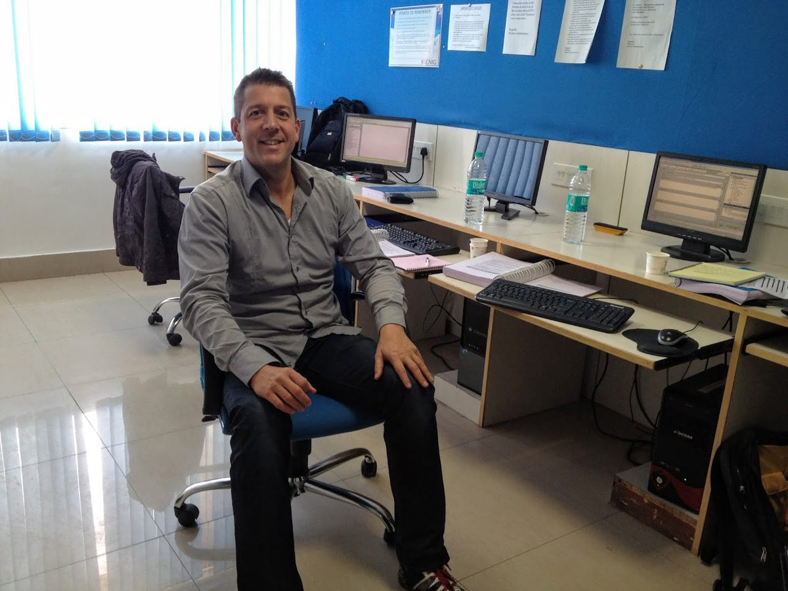
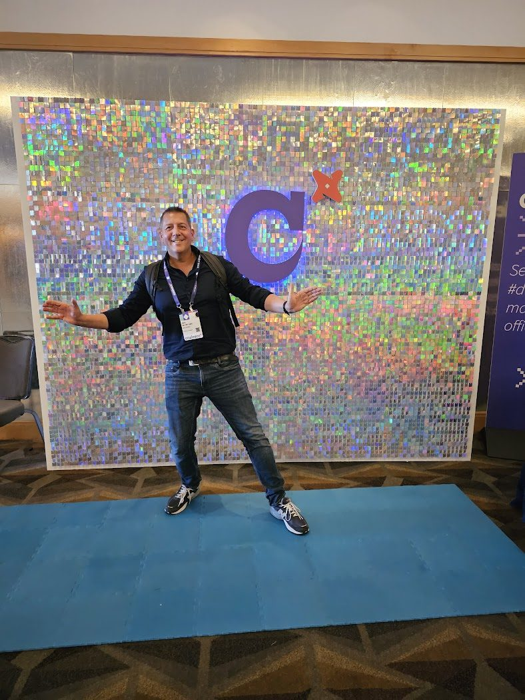
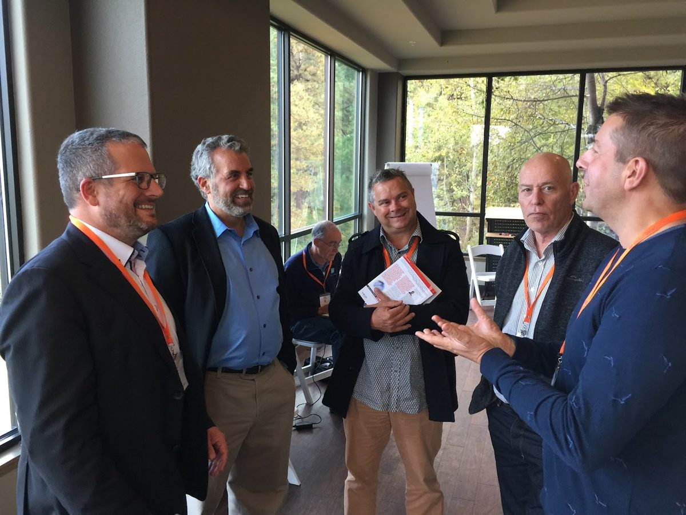
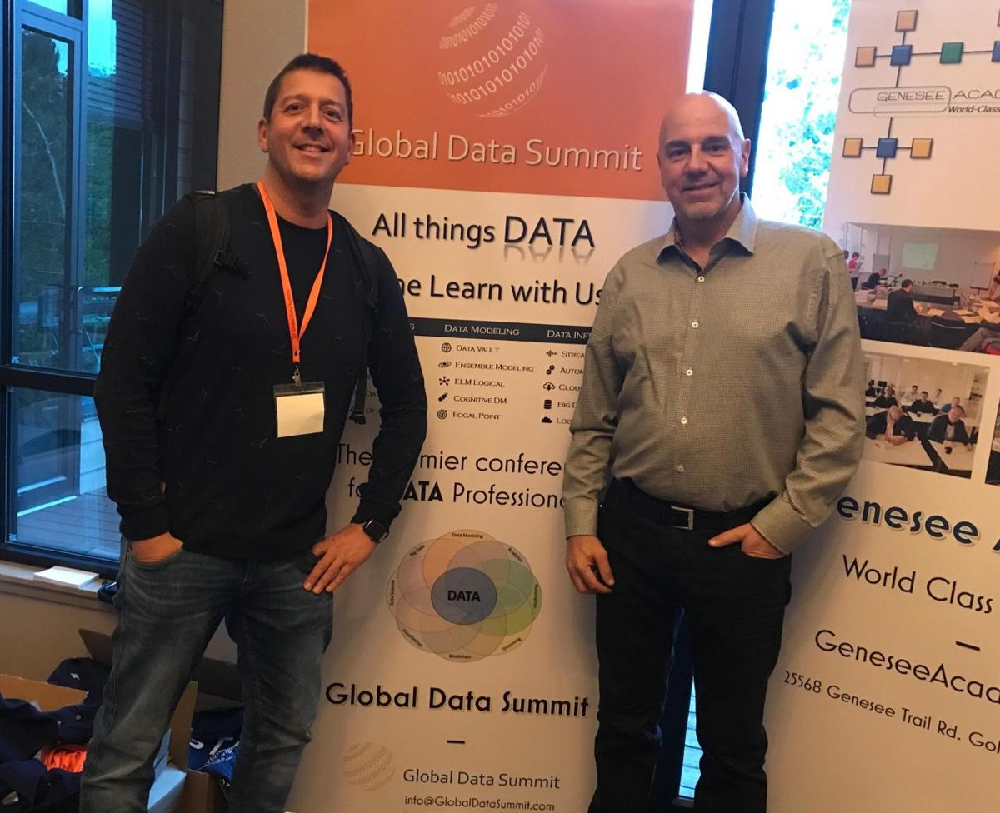
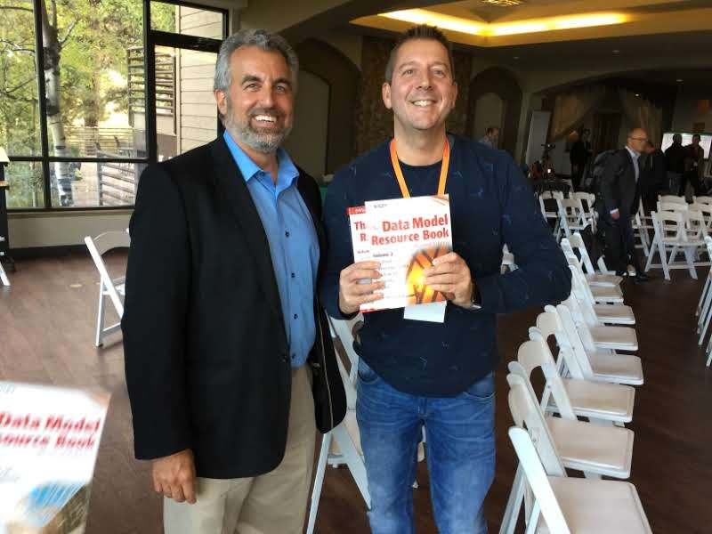

From bank to builder
I am Jaco van der Laan. For more than 25 years I worked on data architecture and data modeling, most of it in large Dutch banks, where data has to be right and rules have to hold. Today I build my own tools on top of my own structured data, with AI doing much of the coding.
That combination is what a Build Day brings to your table: the discipline of a bank, at the scale of your company, and the speed AI now makes possible. I like nothing better than helping someone get from “I have an idea” to “look, it works”.

I started with small business apps
My first job, in 1987, was building custom business applications. For more than twenty years after that I built apps, CRM systems and reports for companies of every size, from local firms to Sanofi-Aventis, L’Oréal, DSM, Cordis and AEGON. Since 2000 I have worked independently, through my own company.
So the tools people bring to a Build Day (a better invoice check, a contact list that stays up to date, a report nobody has to rebuild every month) are tools I have been building since long before AI wrote any of the code.
Where I have built

- ABN AMRO (2024–2026): specialist in data platform modeling and engineering for the new Finance & Risk data platform. Modeling standards, and a model-driven method that generates the SQL, the control flow and the tests from the models, with lineage and data-quality monitoring built in.
- de Volksbank (2018–2024): lead data modeler and solution architect for the model-driven data warehouse of ASN Bank, SNS, RegioBank and BLG Wonen. This is where MDDE, Model-Driven Data Engineering, was built.
- Rabobank (2014–2019): BI software architect for International Risk & Finance, guiding one consistent Data Vault approach across programmes.
- Albron and Santander Consumer Finance (2009–2014): Data Vault warehouses, ETL, cubes and reporting on the Microsoft BI stack.
- Sanofi-Aventis, L’Oréal, DSM, Cordis, AEGON and many others (1987–2014): business applications, CRM and reporting.
What I took from the banks is simple: describe what the business means first, then let the structure carry it. A good model starts with the business, not the database.
Projects I am proud of
A new data warehouse at de Volksbank. We separated what the data means from how it runs. The models became metadata, and the platform generated the transformations, the data-quality tests and the documentation from them. Business people could trust the numbers because the physical design was regenerated from a model they could read. The trade press covered it: banken.nl, Nieuw datawarehouse in aanbouw bij de Volksbank, December 2019.
Proving a migration is identical. For a bank’s Risk & Finance platform I migrated complex legacy SQL to a new integration layer. The hard part is not rewriting the SQL; it is proving the new version gives exactly the same data. So I built tooling that compares the query step by step instead of only the end result. A difference in 50,000 rows then points to the one step that caused it, which made the debugging about ten times faster.
My own system. Mail, calendar, reading, finance, travel and photos run on one structured base I built myself, with rules that flag a mismatch instead of guessing. The use cases on this site come from it.
New ideas, turned into something teams use

In most teams I end up as the one who brings in new ideas and challenges the patterns everyone is used to, and then turns the idea into a framework the team can actually adopt. MDDE started that way. Today I do the same with AI: what I learn by building on my own data becomes a method for others, written down in Breakthrough Modeling.
The creative side matters to me as much as the technical one. I take inspiration from science, design and the arts, from contemporary dance and opera to hiking and travel. Looking for the pattern and keeping a sense of craft is how I approach a messy data problem too.
Never solo

The work is a team sport. At de Volksbank I invited CrossBreeze (Harmen Wessels and Willem Otten), whom I had met on the Rabobank project, to help build the framework. I founded the Model-Driven Data Engineering meetup to share lessons and live demos with other modelers; it was rated 4.6 out of 5 across 52 reviews and is now run by the community. In 2019 I brought Roelant Vos’s three-day data warehouse design patterns training to Utrecht.
What colleagues say
“He combines strong analytical expertise with a solution-driven mindset, translating complex requirements into clear, scalable designs. His calm, articulate communication style — thoughtful yet firm — brings clarity and confidence to every discussion. Always up to date with emerging technologies, he generously shares innovative ideas that elevate the entire team.”
Pallavi Rastogi, Enterprise Data Modeler, APG Asset Management
“A highly accomplished developer, with a great ability to communicate even the most complex technical solutions to both technical and non-technical audiences. Highly productive, and someone who never does less than an excellent job. A great team member, sharing his knowledge freely.”
David Norris, data professional
“Working with Jaco is a pleasure — he is extremely smart in the field of BI, strong both in setting up concepts and designs and in building the actual data warehouse. His knowledge of vaulting models and metadata helped realize a fast, accurate platform. Enthusiastic and kind, he brings the team together.”
Manuel Hernandez, DWH Tester, Nederlandse Spoorwegen
“Jaco brought the data warehouse and BI to the next level with his technical expertise and in-depth functional knowledge. Enthusiastic, result-driven, and able to convert business needs into real implementations.”
Jan Pronk, Managing Partner / Technology Expert, 2daysmood
“Jaco kan je gerust de Nederlandse Hans Hultgren van de BI-wereld noemen. Hij kan ontzettend goed uitleggen hoe je een goede data vault in elkaar zet, waar de valkuilen zitten en hoe je business value creëert. Hij staat op mijn speed-dial voor alle BI-gerelateerde vraagstukken.”
(You could call Jaco the Dutch Hans Hultgren of the BI world. He explains very well how to build a good data vault, where the pitfalls are and how you create business value. He is on my speed dial for every BI question.)
Bas M. Dam, Test Automation Consultant, PerformanceArchitecten
Explaining it plainly

Complex things explained simply is the skill I care about most, and it is what a Build Day needs: you decide what the tool must do, so you have to understand it.
- Talks: a live demo of generating a data warehouse from models at de Volksbank in Utrecht (December 2019, more than 90 attendees); a customer case at the Global Data Summit in Denver; my experience applying AI in practice at the Dutch Data ZZP Netwerk.
- Writing: more than 240 articles on Medium about data architecture, data quality and making AI reliable, plus the article series on Structure Beats Magic.
Now I build on my own life first
Since mid-2026 I am on a research sabbatical to prepare for the next phase, with my full attention on AI, data and systems. I spend it building. Everything on my sites is something I actually run. That is also the honest test for a Build Day: if a method only works on slides, it does not belong on the day.
Standing on good shoulders

My approach rests on people who shaped how we model data: Len Silverston (The Data Model Resource Book), Alec Sharp on business-oriented modeling, Hans Hultgren and Roelant Vos on Data Vault, and Inmon and Kimball before them. I keep learning at the source, from Genesee Academy’s Advanced Data Vault and Alec Sharp’s modeling masterclass to the Anthropic AI courses.
Certifications: Certified Data Vault Data Modeler (Genesee Academy), SnowPro Core, dbt Developer (dbt Labs), Microsoft Certified IT Professional — BI.
More of the thinking behind it
- Structure Beats Magic: why structure beats AI magic
- Breakthrough Modeling: the modeling method behind the tools
- Deliberate Way: the same structure, pointed at travel
- Medium: more than 240 articles